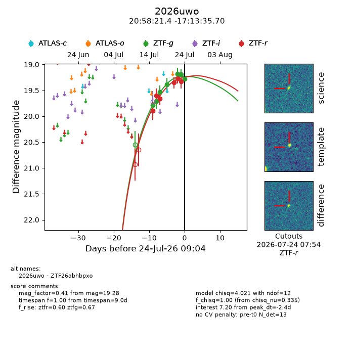
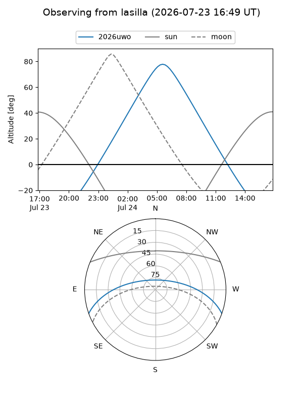
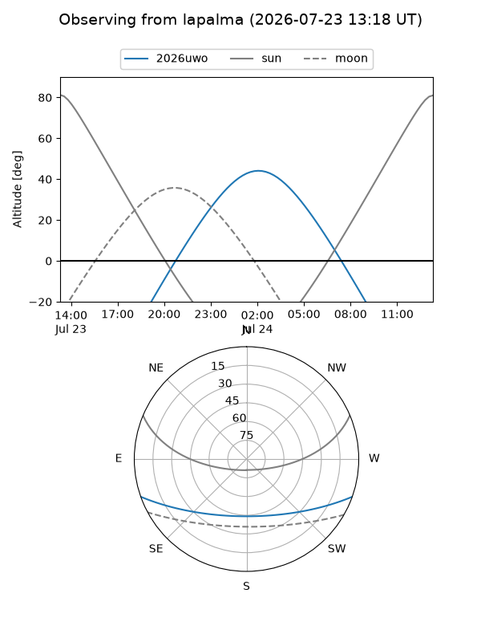
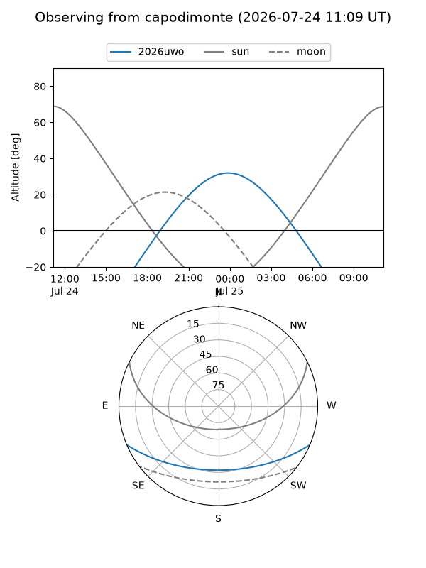
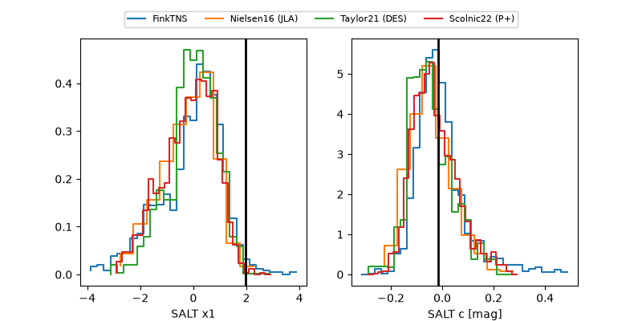

2026uwo
Target 2026uwo at 2026-07-24 09:06
Aliases and brokers:
FINK-ZTF: ztf.fink-portal.org/ZTF26abhbpxo
Lasair-ZTF: lasair-ztf.lsst.ac.uk/objects/ZTF26abhbpxo
ALeRCE-ZTF: alerce.online/object/ZTF26abhbpxo
YSE-PZ: ziggy.ucolick.org/yse/transient_detail/2026uwo
TNS name: wis-tns.org/object/2026uwo
Direct TNS query: direct search
alt names
ZTF26abhbpxo (ztf,fink_ztf)
2026uwo (tns,yse)
Coordinates:
equatorial (ra, dec) = 314.5894,-17.22658
equatorial (HMS+DMS) = 20:58:21.45,-17:13:35.70
galactic (l, b) = (30.4988,-35.59852)
Flags:
TNS type: nan
peak dt: -2.4
Photometry:
last ztfg=19.28, ztfr=19.33
7 ztfg, 6 ztfr detections
Lightcurve

Visibility



Additional plots
